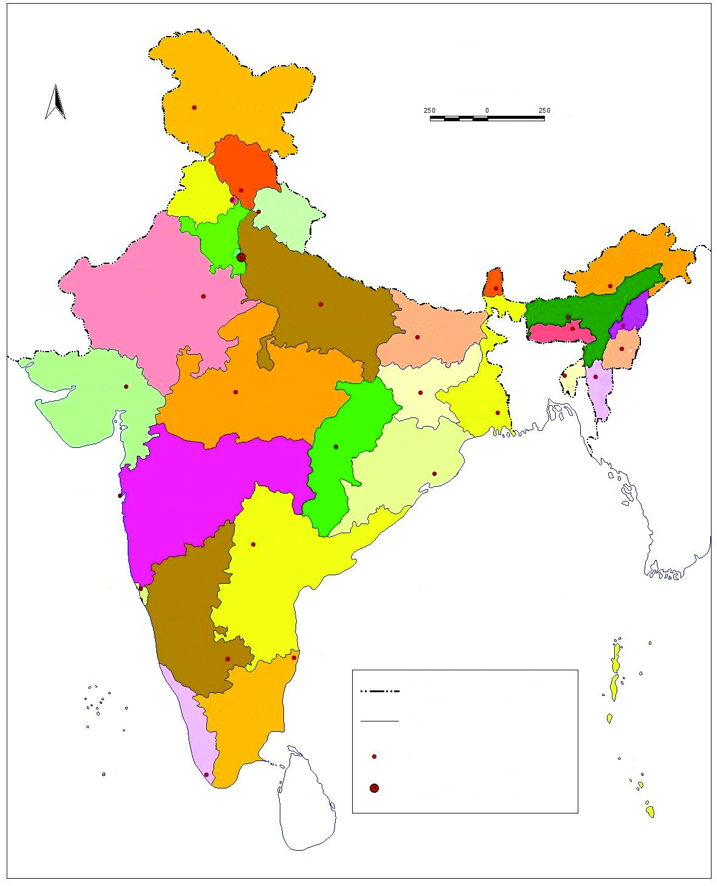
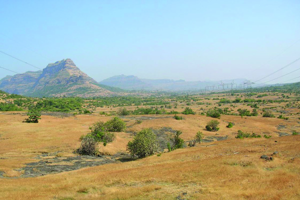
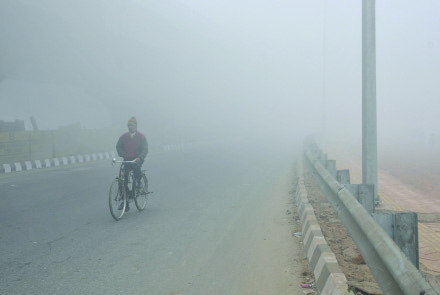
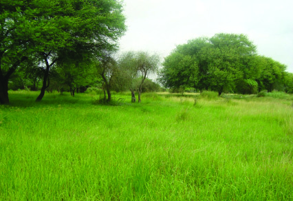
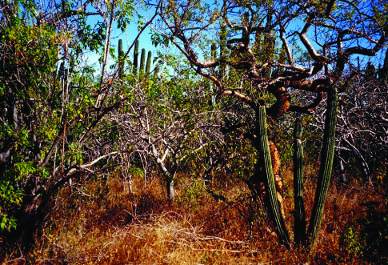

kmaq-ly-imkv{Xw V
134
134
134
kvIqƒ Akw-ªn-bn¬ \n߃ FSp-°p∂
{]Xn⁄ H∂v Hm¿Øv t\m°q. B
{]Xn⁄ XpS-ßp-∂Xv C{]-Im-c-at√?
C¥y Fs‚ cmPy-am-Wv. F√m C¥ym-°mcpw
Fs‚ ktlm-Zcoktlm-Z-c≥am-cm-Wv. Rm≥
Fs‚ cmPysØ kvt\ln-°p-∂p.
kºq¿Whpw sshhn-[y-]q¿W-hp-amb
AXns‚ ]mc-º-cy-Øn¬ Rm≥ A`n-am\w
sIm≈p-∂p...
C¥y-bpsS sshhn-[y-]q¿W-amb ]mc-º-cy-
Øn¬ A`n-am\w sIm≈p-∂-h-cmWv \Ωƒ
C¥ym-°m¿. thjw, `mj, BNmcw
XpSßnb-h-bn-se√mw ]pe¿Øp∂ sshhn-
[y-ß-fmWv C¥ysb Hcp hyXykvX
Page 54
Page 55
\ΩpsS C¥y
135
135
135
cmPyam°p-∂-Xv. `q{]-Ir-Xn, Imem-h-ÿ, kky-Pm-e-߃, P\-Po-hnXw
XpSßnbnh-bn--sem-s°bpw Cu sshhn-[y-߃ \ap°p ImWmw. C{X-
tbsd sshhn-[y-ß-fp-s≠-¶nepw PmXn-˛-a-X-˛-`mjmt`Z-at\y GtIm-Z-c-
k-tlm-Z-c-ß-sf-t∏mse H‰-s°-´mbn Pohn-°p-∂-h-cmWv C¥ym-°m¿.
C¥y-bnse sshhn-[y-ß-sf-°p-dn®v IqSp-X¬ Adn-tbt≠? Cu
A[ymbw AXn\v hgn-sbm-cp-°p∂p.
C¥y-˛-ÿm-\hpw Ab¬ cmPy-ßfpw
ap≥ A[ym-b-Øn¬ h≥I-c-I-sf-°p-dn®v \mw N¿® sNbvX-t√m. GXv
h≥I-c-bn-emWv C¥y ÿnXn sNøp-∂-sX∂v ]d-bmtam?
GjybpsS -`q-]-S-Øn¬ \n∂pw C¥ybpsS Ab¬cmPy-߃ GsX-
√m-sa∂v Is≠Øq.CXn-\mbn A‰vetkm Npa¿`q]-S-ßtfm D]-tbm-K-
s∏-Sp-Øm-hp-∂-Xm-Wv.
`q]-S-Øn¬ (Nn{Xw˛11.1) C¥y-bpsS sX°p`mKØp≈ kap-{Zw I≠nt√?
Cu kap-{Z-amWv C¥y≥ alm-k-ap-{Zw. Cu kap-{Z-Øns‚ Ing°v `mKw
_wKmƒ Dƒ°-S-se∂pw ]Sn-™mdv `mKw Ad-_n-°-S-se∂pw Adn-b-
s∏-Sp∂p.
C¥y-˛-kw-ÿm-\-߃
`cW kuI-cy-Øn-\mbn C¥ysb 29 kwÿm-\-ßfmbn Xncn-®ncn-°p-
∂p. 2014 Pq¨ amkØn¬ B{‘m{]tZiv kwÿm\w koam{‘m,
sXe¶m\ F∂nßs\ c≠v kwÿm\ßfmbn hn`Pn°s∏´p. Hmtcm
kwÿm-\-Øn-s‚bpw `cWtI{μ-߃ Xe-ÿm\w F∂ t]cn¬ Adn-
b-s∏-Sp-∂p.
C¥y-bpsS `q]Sw (Nn{Xw˛11.1) \nco-£n®v kwÿm-\-ß-fpw Ah-bpsS
Xe-ÿm\\K-c-ß-fpw Is≠Øq.
cmPy-Øns‚ samØ-amb `cWw ssIImcyw sNøp-∂- tZiobXe-ÿm-
\-\KcamWv U¬ln-.
Page 56

kmaq-ly-imkv{Xw V
136
136
136
Nn{Xw˛11.1
C¥y
cmjv{Sob `q]Sw
A¥mcmjv{S AXn¿Øn
kwÿm\ AXn¿Øn
kwÿm\ Xe-ÿm\w
tZiob Xe-ÿm\w
{io\-K¿
PΩp-Im-ivao¿
knwe
lnam-N¬
{]tZiv
Ofin-KVv
]©m_v
Pbv]q¿
cmP-ÿm≥
Km‘n-\-K¿
KpP-dmØv
apwss_
alm-cmjv{S
]\mPn
tKmh
I¿Wm-SI
_wK-epcp
tIcfw
Xncp-h-\-¥-]pcw
Xan-gv\mSv
sNss∂
B{‘m-{]-tZiv
sslZ-cm-_mZv
a[y-{]-tZiv
t`m∏m¬
DØ¿{]-tZiv
eIv\u
DØ-cmJfiv
sUdm-Uq¨
_olm¿
]m‰v\
Pm¿Jfiv
dm©n
HUnj
`ph-t\-iz¿
OØo-kvKUv
dmbv]q¿
lcn-bm\
U¬ln
\yqU¬ln
]›n-a-_w-Kmƒ
sIm¬°Ø
Acp-Wm-N¬ {]tZiv
C‰m-\-K¿
B mw
Znkv]q¿
kn°nw
KmMvtSmIv
taLm-eb
jnt√mMv
\mKm-em‚v
sImlna
aWn-∏q¿
Cw^m¬
ant mdmw
sFkvhmƒ
{Xn]pc
AK¿Øe
C¥y≥ almkap{Zw
_wKmƒ Dƒ°-S¬
Ad-_n-°S¬
e£-Zzo]v
B≥U-am≥ \nt°m-_m¿ Zzo]-k-aqlw
N
Page 57
\ΩpsS C¥y
137
137
137
kwÿm-\-ßsf IqSmsX t]m≠n-t®-cn, Zma≥ Znbp, Zm{Zm -\-K¿ lthen,
Nfin-K-Vv, e£-Zzo-]v, B≥U-am≥ \nt°m-_m¿ Zzo]-k-aqlw F∂o
Bdv tI{μ-`-cW {]tZ-i-ßfpw C¥y-bn-ep-≠v.
`q]Sw (Nn{Xw˛11.1) \nco-£n®v tI{μ`cW{]tZ-i-ß-fpsSbpw tZiob
Xe-ÿm\ \K-c-Øn-s‚bpw ÿm\w Is≠-Øq.
C¥y-˛-`q-{]-IrXn
]¿Δ-X-߃, ]oT-`q-an-Iƒ, ka-X-e-߃, Zzo]p-Iƒ F∂n-ßs\ hnhn-[-
`qcq-]-ß-ƒ `qan-bnep≠v. Hcp `q{]-tZ-i-Øn¬ ImW-s∏-Sp∂ CØcw
khn-ti-j-X-I-fmWv Ahn-SsØ `q{]-Ir-Xn.
sNdpXpw hep-Xp-amb ]¿h-X-\n-c-Ifpw ka-X-e-{]-tZ-i-ßfpw hnim-e-
amb ]oT-`qan {]tZ-i-ßfpw acp-`q-anbpw Xoc-{]-tZ-i-ßfpw Zzo]p-Ifpw
Dƒs∏´ sshhn-[y-am¿∂ `q{]-Ir-Xn-bmWv C¥y-bv°p-≈-Xv.
C¥y-bnse ]¿h-X-߃
hnhn[ h≥I-c-I-fnse {][m-\-]¿h-X-\n-c-I-sf-°p-dn®v ap≥ A[ym-b-Øn¬
\n∂pw \n߃ a\- n-em-°n-bn-´p-≠m-Ip-a-t√m.
temI-Ønse Xs∂ Db-c-ta-dnb ]¿hX\nc-I-fmb lnam-e-b-Øns‚
Hcp `mKw C¥y-bn-emWv Dƒs∏-Sp-∂-Xv. lnam-e-b-tØ-°mƒ Dbcw
Ipd™ \nc-I-fmb Bc-h-√n, ]›n-a-L-´w, ]q¿Δ-L-´w, hn‘ym-\nc-
Iƒ, k-Xv]pcm\nc-Iƒ F∂n-h-bmWv C¥y-bnse a‰v {][m\ ]¿h-X-
\n-c-Iƒ. Cu ]¿h-X-\n-c-I-fn¬ \ns∂√mw At\Iw \Zn-Iƒ
D¤hn°p∂p≠v.
]›n-a-L-´-\n-c-Iƒ
lnam-e-b-]¿hXw
Page 58
kmaq-ly-imkv{Xw V
138
138
138
KwKm-k-a-Xew
C¥y-bnse ka-X-e-߃
AXn-hn-im-e-am-bXpw \nc-∏m-b-Xp-amb `q{]-tZ-i-ß-fmWv ka-X-e-߃.
lnam-eb ]¿h-X-\n-c-Iƒ°v sX°p `mKØv hnim-e-amb Hcp ka-X-e-
ap≠v. lnam-e-b-Øn¬\n∂pw \Zn-Iƒ Hgp°n-s°m-≠p-hcp∂ F°¬
\nt£-]n-®mWv Cu ka-X-e-߃ cq]-s∏´Xv. kn‘p-˛-KwK˛{_-“-]p{X
ka-X-e-߃ F∂mWv Cu ka-X-e-{]-tZiw Adn-b-s∏-Sp-∂-Xv.
Cu ^e]pjvS-amb
k a X e ß - f n ¬
tKmXºv, s\√v, tNmfw,
Icnºv
apX-emb
At\Iw
hnf-Iƒ
Irjn sNøp-∂p. AXn-
\m¬
C¥-y-bpsS
`£y-I-e-hd F∂v Cu
{]tZ-isØ hnti-jn-
∏n-°m-dp-≠v.
C¥y-bnse acp-`qan
hoin-b-Sn-°p∂ Im‰pw sImSpwNqSpw IsÆ-ØmZqctØmfw hym]n-®n-
cn-°p∂ aW¬°q-\-Ifpw acp-`q-an-I-fpsS khn-ti-j-X-I-fmWv. C¥y-
bpsS hS-°p-]-Sn-™mdv ÿnXn sNøp∂ cmP-ÿm≥ kwÿm-\-Øns‚
IqSp-X¬ `mKhpw acp-
`qan-bmWv. Ym¿ acp-`qan
F∂-dn-b-s∏-Sp∂ Cu
{]tZiØv ag hfsc
IpdhmbXn\m¬ P\-
hm-khpw Irjnbpw Ipd-
hm-Wv.
Ym¿ acp-`qan
Page 59

\ΩpsS C¥y
139
139
139
C¥y-bnse ]oT`qanIƒ
Np‰p-ap≈ {]tZ-i-ßsf
At]-£n®v Db¿∂Xpw
apIƒ`mKw Gsd°psd
\nc-∏m-b-Xp-amb `q{]-tZ-i-
ß-fmWv ]oT-`q-an-Iƒ.
C¥y-bnse G‰hpw
henb ]oT-`q-an-bmWv
U°m¨
]oT-`q-an.
amƒhm, tOm´m-\m-Kv]q¿
F∂n-h-bmWv a‰v {][m\ ]oT-`q-an-Iƒ.
C¥y-bnse Xoc-{]-tZ-i-߃
kap-{Z-tØmSv tN¿∂v ÿnXn
sNøp∂ \nc-∏mb `q{]-tZ-i-
ß-fmWv Xoc-{]-tZ-i-߃.
\of-ta-dnb Xoc-{]-tZ-iamWv
C¥y-°p-≈Xv.
$
C¥y-bpsS G-‰hpw sX°p `mKØv ÿnXn-sN-øp∂ Xoc{]-
tZiap≈ kwÿm\w GsX∂v `q]S-Øn¬ \n∂pw Is≠-Øq.
$
C¥y-bnse Zzo]p-Iƒ
kap-{Z-Øm¬ Np‰-s∏´ Ic-`m-K-ßsfbmWv Zzo]p-Iƒ F∂v ]d-bp-∂Xv.
C¥y-bpsS `mK-amb At\Iw Zzo]p-Iƒ C¥y≥ alm-k-ap-{Z-Øn¬
ÿnXn sNøp-∂p-≠v. C¥y-bnse Zzo]-k-aq-l-ß-fmWv Ad-_n-°-S-ense
e£-Zzo]pw _wKmƒ Dƒ°-S-ense B≥U-am≥ \nt°m-_m¿ Zzo]-
kaql-ßfpw. Ah-bpsS Nn{X-ß-fmWv NphsS \evIn-bn-cn-°p-∂-Xv.
U°m¨ ]oT-`qan
Xoc-{]-tZiw
Page 60
kmaq-ly-imkv{Xw V
140
140
140
`q]-S-Øn¬ (Nn{Xw ˛ 11.1) \n∂pw e£-Zzo-]ns‚bpw B≥U-am≥ \nt°m-
_m¿ Zzo]p-I-fp-sSbpw ÿm\w Is≠-Øq.
e£-Zzo]v
B≥U-am≥ \nt°m-_m¿ Zzo]p-Iƒ
KwKm\Zn
C¥y-˛-\-Zn-Iƒ
C¥y-bnse {][m\ ]¿h-X-\n-c-I-sf-°p-dn®v \Ωƒ N¿® sNbvXp-h-t√m.
CXn¬ an° ]¿h-X-\n-c-Ifpw
At\Iw \Zn-I-fpsS D¤h-ÿm-\-
ß-fmWv. lnam-eb ]¿h-X-\n-c-I-
fn¬ \n∂p-¤-hn-°p∂ kn‘p,
KwK, {_“-]p{X F∂n-hbpw
D]Zzo]nse Db¿∂ {]tZ-i-ß-fn¬
\n∂p-¤-hn-°p∂ alm-\-Zn, tKmZm-
h-cn, IrjvW, Imth-cn, \¿aZ,
Xm]vXn F∂o \Zn-IfpamWv C¥y-
bnse {][m\ \Zn-Iƒ.
C¥y-˛-Imem-hÿ
hf-sc-b-[nIw sshhn-[-y-ap≈ Imem-h-ÿ-bmWv C¥-y-bn¬ \ne-\n¬°p-
∂-Xv. C¥-y-bn¬ ag-°mew, ssiX-y-Imew, th\¬°mew F∂n-ß-s\-
bp≈ EXp-°-fmWv A\p-`-h-
s∏-Sp-∂-Xv. Pq¨ apX¬
sk]vXw-_¿
hscbpw
HIvtSm_¿ apX¬ \hw-_¿
hscbpap≈ c≠v ag-°me-
ßfmWv C¥-y-bn¬ D≈-Xv.
Ad-_n-°-S-en-t\mSv tN¿∂
]Sn-™m-d≥ Xoc-{]tZi-
ßfnepw hS°p Ing-°≥
ag-°meØv
Page 61

\ΩpsS C¥y
141
141
141
kwÿm-\-ß-fnepw Cu Ime-bf-
hpIfn¬ [mcmfw ag e`n-°p-∂p.
C¥y-bn¬ G‰-hp-a-[nIw ag- e-`n-
°p∂ {]tZ-i-amWv taLm-e-bnse
Nndm-]p-©n. C¥y-bnse Im¿jn-I-ta-
Je Cu ag-°m-e-ßsf B{i-bn-®mWv
\ne-\n¬°p∂-Xv.
Unkw-_¿ apX¬ s^{_p-hcn
hsc-bp≈ amk-ß-fn-emWv
C¥y-bn¬ ssiXy-Imew A\p-
`-h-s∏-Sp-∂-Xv. ssiXy-Im-esØ
XpS¿∂v am¿®v, G{]n¬, sabv
amk-ß-fn¬ C¥y-bn¬ DjvW-
Imew A\p-`-h-s∏-Sp-∂p.
ssiXyIme Zriyw
th\¬°me Zriyw
C¥y-˛-ss\k¿KnI kkyPmeßfpw, P¥p°fpw
C¥ybpsS `q{]IrXnbnepw Imemhÿbnepw Gsd sshhn[yßfps≠∂v
\n߃ a\ nem°nbt√m. Cu sshhn[y߃°\pkrXambn
kkyPmeßfnepw P¥p°fnepw H´\h[n sshhn[y߃ \ap°p ImWmw.
ag-°m-Sp-Iƒ, Ce-s]m-gnbpw ImSp-Iƒ, apƒ°mSp-Ifpw Ip‰n-°m-Sp-Ifpw,
]p¬{]tZ-i-߃ apX-emb ss\k¿KnI kkyPmeßfpw C¥y-bn-ep-≠v.
ag°mSv
Ce-s]m-gnbpw ImSv
B\, knwlw, ISp-h, ]pen, Im´p-t]m-Øv, am≥, abn¬, thgm-º¬ apX-
emb At\Iw ]£n-˛-ar-Km-Zn-I-fpsS Bhm-k-tI-{μ-ß-fmb Cu {]tZ-i-
߃ C¥y-bpsS hne-a-Xn-°m-\mImØ kº-ØmWv F∂-Xn¬
kwiban-√.
Page 62


142
142
142
\Ωƒ C¥y-°m¿
`q{]-IrXn, Imem-hÿ, kky-P-¥p-Pm-e-߃ Ch-bn-sems° C¥y-bn¬
Hcp-]mSv sshhn-[yßfp-s≠∂v a\- n-em-bnt√? Cu sshhn-[y-߃°-
\p-kr-X-ambn P\-Po-hn-X-Ønepw sshhn-[y-ß-fp-≠v.
Z£n-tW-¥y-°m¿°v Acn-bm-Wv {][m\ `£y-[m-\ysa-¶n¬ DØ-tc-
¥y-°m¿°v tKmX-ºmWv {][m\ `£y-[m-\yw. Blm-c-co-Xn-bn¬ {]mtZ-
in-I-amb Cu hyXym-k-߃°v Imc-Wsa¥m-bn-cn°mw? ¢mkn¬ N¿®
sNøq.
Z£n-tW-¥y-°m¿ s]mXpsh ]cp-Øn-h-kv{X-ß-fmWv {][m-\-ambpw D]-
tbm-Kn-°p-∂Xv. F∂m¬ ]¿h-X-{]-tZ-i-ß-fn¬ Iºnfn hkv{X߃°mWv
{]map-Jyw. F¥m-bn-cn°mw ImcWw?
BtLm-j-ß-fn-ep-ap≠v sshhn-[y-߃. tIc-fo-b-cpsS tZio-tbm-’-h-
am-Wt√m HmWw. Xan-gv\m-´n¬ s]m¶-emWv {][m\ BtLm-jw.
Bkmanse -_nlp, DØ-tc-¥y-bn¬ tlmfn... F∂n-ßs\ BtLm-j-ß-
fnepw BNm-c-ß-fnepw sshhn[yw {]I-S-am-Wv. C¥y-bpsS kmwkvIm-cnI
sshhn-[y-߃°v IqSp-X¬ DZm-l-c-W-߃ Is≠-Øm≥ {ian-°q.
$
`mj
$
]p¬{]tZiw
apƒ°mSv
Page 63

\ΩpsS C¥y
143
143
143
\mw hkn-°p∂ {]tZ-i-ß-sf-°mƒ XnI®pw hn`n-∂-amWv C¥y-bnse
CX-c-`m-K-߃. `q{]-Ir-Xn-bnepw Imem-h-ÿ-bnepw kky-˛-P-¥p-Pm-e-
ß-fnepw am\-h-Po-hn-X-Ønepw hf-sc-b-[nIw sshhn-[y-ß-fp-s≠-¶nepw
AXns\√mw AXo-X-ambn C¥y Hscm‰ cmPy-ambn \ne-\n-ev°p-∂p.
C¥y-bpsS kar≤hpw sshhn-[y-]q¿W-hp-amb ]mc-º-cy-Øn¬ Xo¿®-
bmbpw \mw A`n-am\w sIm≈pI Xs∂ sNøpw.
kw{Klw
$
Gjym h≥I-c-bpsS sX°p `mK-ØmWv C¥y ÿnXn- sN-øp-∂Xv.
$
C¥ybn¬ 28 kwÿm-\-ß-fpw 6 tI{μ-`-c-W-{]-tZ-i-ß-fpw D≠v.
$
]¿h-X-߃, ]oT-`q-an-Iƒ, ka-X-e-߃, Xoc-{]-tZ-i-߃, Zzo]p-Iƒ,
F∂nh Dƒs∏´ `q{]-IrXnbmWv C¥y-bv°p-≈-Xv.
$
C¥y-bnse {][m\ \Zn-I-fmWv kn‘p, KwK, {_“-]p-{X, alm-
\Zn, tKmZm-h-cn, IrjvW, Imth-cn, \¿Ω-Z, Xm]vXn F∂nh
$
C¥y-bnse Ime-ßsf ag-°m-ew, ssiXyIm-ew, th\¬°mew
F∂n-ßs\ Xcw Xncn-®n-cn-°p-∂p.
$
ag-°m-Sv, Ces]mgnbpw ImSv, apƒs®-Sn-Ifpw Ip‰n-°m-Sp-Ifpw
]p¬{]tZ-i-߃, apX-em-b-h-bmWv C¥y-bnse {][m\ kky-Pme-
߃.
$
`q{]-Ir-Xn, Imem-h-ÿ, kky-Pm-e-߃, `mj, thjw, `£-W-
coXn, BNm-c-߃, BtLm-j-߃ F∂n-h-bn-se√mw hfscb[nIw
sshhn-[y-߃ Ds≠-¶nepw CXn-s\√mw AXo-X-ambn C¥y Hscm-
‰-cm-Py-ambn \ne-\n¬°p-∂p.
{][m\ ]T-\-t\-´-ßfn¬ s]Sp∂h
$
Gjy h≥I-c-bpsS `mK-amb C¥ybpsS hen-∏w, ÿm\w, AXn-cp-
Iƒ, kwÿm-\-߃, Xe-ÿm-\-߃ F∂nh hy‡am°p∂p.
$
C¥ybpsS `uXnI khntijXIfmb `q{]IrXn, \ZnIƒ,
Imemhÿ, kky˛P¥pPme߃ F∂nhbnse sshhn[y߃
hniZoIcn°p∂p.
$
C¥ybpsS kmwkvImcnI khntijXIfmb `mj, thjw,
BNmcßfpw BtLmjßfpw, `£WcoXn, Irjn, F∂nhbnse
sshhn[y߃ hniZoIcn°p∂p.
$
\m\mXzØn¬ GIXzw F∂ Bibw hy‡am°p∂p.
Page 64
kmaq-ly-imkv{Xw V
144
144
144
hne-bn-cpØmw
1.
NphsS \evIn-bn-cn-°p∂ kwÿm-\-ß-fpsS Xe-ÿm-\-߃ GsX-
√m-sa∂v Fgp-Xp-I.
$ Acp-Wm-N¬ {]tZiv
$ cmP-ÿm≥
$ lnam-N¬ {]tZiv
$ OØo-kvKVv
$ antkmdmw
$ tKmh
2.
C¥y-bpsS `q{]-IrXn khn-ti-j-X-Iƒ- hni-Z-am-°p-I.
3.
lnam-e-b-Øn¬ \n∂p-¤-hn-°p∂ \Zn-Ifpw D]Zzo]ob C-¥y-bnse
Db¿∂ {]tZ-i-ß-fn¬ \n∂p-¤-hn-°p∂ \Zn-I-fpw ]´n-I-s∏-Sp-Øp-I.
4.
C¥y-bnse Imem-h-ÿm-k-hn-ti-j-X-Iƒ hni-Z-am-°p-I.
XpS¿ {]h¿Ø-\-߃
$
C¥y-bpsS cmjv{Sob `q]Sw \nco-£n®v 28 kwÿm-\-ß-fpw Ah-
bpsS Xe-ÿm\\K-c-ß-fpw Is≠Øn ]´n-I-]q¿Øn-bm-°p-I.
{Ia\º¿
kwÿm-\-߃
Xe-ÿm\w
1
Acp-Wm-N¬ {]tZiv
C‰m-\-K¿
2
3
4
$
$
$
28
$
C¥y-bnse hkv{X-[m-cW sshhn[yw F∂ Xes°´n¬ Hcp
UnPn‰¬ B¬_w Xøm-dm-°q.
$
A‰ve-kn-s‚tbm Npa¿`q-]-S-ß-fp-sStbm (C¥y˛`uXn-I-`q-]Sw)
klm-b-Øm¬ C¥y-bnse ]¿h-X-ß-fp-sSbpw ka-X-e-ß-fp-sSbpw
]oT-`q-an-I-fp-sSbpw ÿm\w Is≠-Øq.